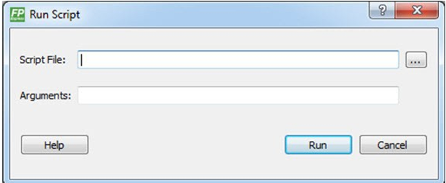
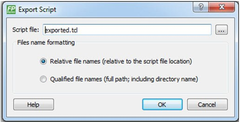

13.1.8 Tcl Commands
(Ask a Question)This section describes the FlashPro Express Tcl commands.
13.1.8.1 About Tcl Commands
(Ask a Question)A Tool Command Language (Tcl) file contains scripts for simple or complex tasks. You can run
scripts from the Windows command line, or store and run a series of Tcl commands in a
*.tcl batch file.
You can run Tcl commands from scripts or from a Windows or Linux command line. Tcl commands are case sensitive. However, their arguments are not.
For information about all Tcl commands supported by FlashPro Express, see the Tcl Commands Reference Guide .
13.1.8.2 Executing a Tcl Script File in FlashPro Express
(Ask a Question)To execute a Tcl script in FlashPro Express:
- From the File
menu, choose Execute Script to display the Run
Script dialog box.
Figure 13-33. Run Script Dialog Box  - Click the Browse button to display the Open dialog box, in which you can go to the folder containing the script file to open. When you click Open, FlashPro Express enters the full path and script filename into the Run Script dialog box.
- In the Arguments box, enter the arguments to pass to your Tcl script. Separate each argument by a space character.
- Click Run.
13.1.8.3 Running Tcl Scripts from the Command Line
(Ask a Question)You can run Tcl scripts from a Windows or Linux command line.
- At the prompt, type the path to the Microchip
software followed by the word SCRIPT, a colon, and the name
of the script file, as follows:
<location of Microchip software>/bin/FPExpress.exe SCRIPT:<filename>The following example executes in batch mode the script foo.tcl:
<location of Microchip software>/bin/FPExpress.exe script:foo.tclThe following example executes in batch mode the script foo.tcl and exports the log in the file foo.txt:
<location of Microchip software>/bin/FPExpress.exe script:foo.tcl logfile:foo.txtThe following example executes in batch mode the script foo.tcl, creates a console where the log is displayed briefly, and exports the log in the file foo.txt:
<location of Microchip software>/bin/FPExpress.exe script:foo.tcl console_mode:brief logfile:foo.txtIf you leave console_mode unspecified or set it to hide, FlashPro Express executes without a console window. To leave the console window open, run the script with the console_mode parameter set to show, as in the following example:
<location of Microchip software>/bin/FPExpress.exe script:foo.tcl console_mode:show logfile:foo.txt - To pass arguments to the Tcl script from the
command line, use the
SCRIPT_ARGSvariable, as follows:<location of Microchip software>/bin/FPExpress.exe SCRIPT:<filename> SCRIPT_ARGS:"param1 param2 param3"Arguments passed to a Tcl script can be accessed through the Tcl variables
argcandargv. The following examples show how a Tcl script accesses these arguments:puts "Script name: $argv0"puts "Number of arguments: $argc" set i 0foreach arg $argv { puts "Arg $i : $arg" incr i}Note: If the script name is protected with double quotes, script names can contain spaces. For example:FPExpress script:"FPExpress tcl/foo 1.tcl"
13.1.8.4 Exporting Tcl Scripts from FlashPro Express
(Ask a Question)To export Tcl scripts from FlashPro Express:
- From the File menu, choose Export Script File.
- Enter the filename and click
Save. The Export Script Options dialog appears, as shown
in the following figure.
Figure 13-34. Script Export Options Dialog Box  - Check the Include commands from current project only to export commands of the current project only. You can specify the filename formatting by selecting Relative filenames (relative to the current directory) or Qualified filenames (absolute path, including the directory name).
- Click OK.